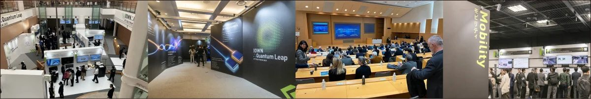

2026年11月24日（火）、東京都武蔵野市のNTT武蔵野研究開発センタで開催された「NTT R&D FORUM 2026」に参加する機会がありました。NTTグループの最新の研究開発成果を紹介するフォーラムで、今年のコンセプトは「Mehr Licht!（もっと光を！）」です。

フォーラムの概要
| イベント名 | NTT R&D FORUM 2026 |
|---|---|
| 会期 | 2026年11月18日（水）〜20日（金）、11月24日（火）〜25日（水） |
| 会場 | NTT武蔵野研究開発センタ（東京都武蔵野市） |
| コンセプト | 「Mehr Licht!（もっと光を！）」— More Photonics for Intelligence |
| 形式 | 招待制 |
「Mehr Licht!」は、ゲーテが残したとされる言葉で、知への探究と未来への希望の象徴とされています。フォーラムでは、この言葉のとおり、光技術を中心とした最新の研究成果が紹介されました。かつて光ファイバが情報社会の礎を築いたように、光の技術は今、データ伝送の枠を超えて、演算やAI、量子コンピューティングへと広がりつつあります。
会場で感じたこと
技術展示は、AIネイティブインフラ「AIOWN」を起点とした構成で、光技術を軸に、AIや量子コンピューティングなど幅広い分野の研究成果が並んでいました。基調講演では、IOWNを宇宙へ広げる「Space AIOWN構想」など、大きなスケールの構想も紹介されています。
大学の研究室で日々扱っているテーマとはスケールが大きく異なりますが、「研究を社会の仕組みとしてどう実装していくか」という視点は共通していて、自分の研究の位置づけを改めて考える機会になりました。研究開発の現場の空気を直接感じられたのは、大きな収穫でした。
おわりに
最先端の研究開発が集まる場に参加でき、良い刺激を受けました。今回の経験を、今後の研究活動にも活かしていきたいと思います。